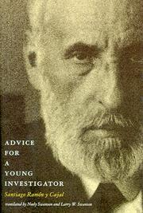

Advice for a Young Investigator
Book·Santiago Ramón y Cajal, 1897·给青年研究者的忠告

Practical advice from a founder of the neuron doctrine for young researchers: how to choose a topic, how to observe, and how to face failure and vanity. The original was in Spanish (1897); the English translation appeared in 1999.
- Author
- Santiago Ramón y Cajal
- Year
- 1897
- Difficulty
- Beginner
- Kind
- Adjacent field
- Schools
- Neuron Doctrine
- Core theories
- Neuron Theory
Editions
- English edition Advice for a Young Investigator Santiago Ramón y Cajal (trans. Neely and Larry W. Swanson) · MIT Press · 1999 Open Library ↗